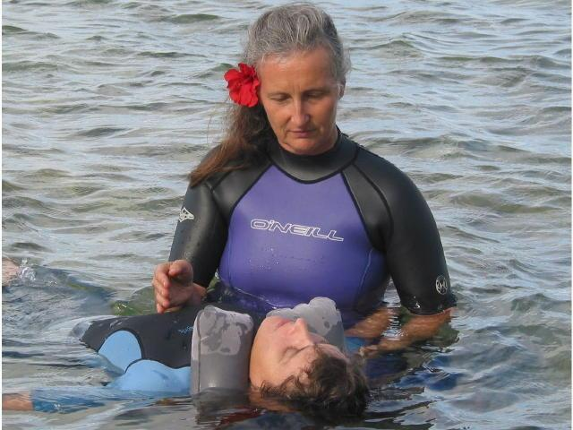

One of the powerful ingredients of a Sacred Wave Healing Immersion experience is AquaCranial® Therapy, an ocean-based extension of CranioSacral Therapy®, which supports health and well-being through extremely light touch and fluid movement while you float on gentle waves. This unique, new modality, developed by Rebecca Goff in conjunction with cetacean research in the 1990’s, offers the benefits of oneness with nature, freedom from gravity, and insulation from electrical and microwave fields. It is suitable for people of all ages.
One of the powerful ingredients of a Sacred Wave Healing Immersion experience is AquaCranial® Therapy, an ocean-based extension of CranioSacral Therapy®, which supports health and well-being through extremely light touch and fluid movement while you float on gentle waves. This unique, new modality, developed by Rebecca Goff in conjunction with cetacean research in the 1990’s, offers the benefits of oneness with nature, freedom from gravity, and insulation from electrical and microwave fields. It is suitable for people of all ages.
Deborah Burnham, PT uses light touch as a method of detection and correction to encourage your own healing mechanism, through the craniosacral system, to release the effect of stresses from your nervous system. By strengthening the body’s ability to take care of itself, a wide range of illness, pain and dysfunction can be alleviated. Freeing yourself from neck pain is powerfully supported by recovering the unlimited mobility of the strong connective tissues influencing the cervical area.
• • •
AquaCranial® Therapy is a sacred baptism which acknowledges the gifts of nature, profoundly supports emotional release work, and potentiates self-discovery. The benefits of AquaCranial® Therapy include rejuvenation, resistance to disease, regeneration of soft tissue, a more flexible body, and better overall function.
Deborah adds her own essence to AquaCranial by incorporating an information sharing personalized conference focused on discovering clues in your life-limiting patterns and revealing their blessings to allow you to soulfully craft a powerful intention for your AquaCranial session.
Raja Yoga spiritual knowledge and meditation, AquaCranial® Therapy, CranioSacral Therapy®, Therapeutic Touch(SM), Integrated Awareness®, sound healing, Compassionate Communication (NVC), and physical therapy inform Deborah’s work.
To learn more and to experience a Healing Immersion with AquaCranial® Therapy, call Deborah on Kaua’i, Hawai’i at 808-651-4534.
Introductory video: see the video below to learn more. Click on the video to begin.